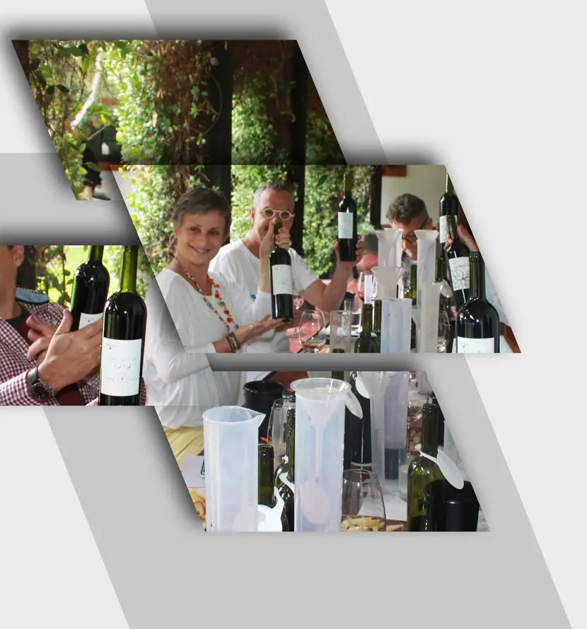
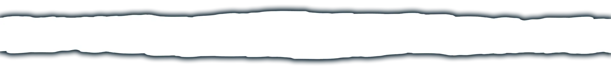

Tour Grupales
Disfrutá Mendoza compartiendo tours en grupo! Excursiones al Parque Aconcagua, Camino del Vino & Turismo Aventura

TOUR TRADICIONAL
Este tour le permitirá conocer las bodegas localizadas en la primera zona vitivinícola de Mendoza, conformada por los departamentos de Luján de Cuyo y Maipú.
Durante el recorrido podrá apreciar el proceso de elaboración de vinos en forma artesanal e industrial, visitando dos bodegas reconocidas que ofrecerán una degustación al final de la visita.
Terminando la tarde conoceremos también una fábrica de aceite de oliva para saborear los diferentes varietales extra virgen que allí se ofrecen junto a un exquisito pan casero.
TOUR EXTREME
Comenzaremos recorriendo la zona de Luján de Cuyo para visitar Achaval Ferrer, bodega localizada a la margen del Río Mendoza. Se trata de una pequeña empresa Argentina/Italiana que produce uno de los mejores vinos en Mendoza. Simplemente basta con leer publicaciones internacionales como Wine Spectator o Decanter para comprender la fama que los varietales de Achaval Ferrer tienen en el mundo. Efectuaremos la degustación de sus vinos y luego de conocer la bodega continuamos nuestro tour hacia la impresionante cordillera de los Andes para una experiencia de rafting inolvidable por el río Mendoza.
Una vez que recibimos las explicaciones de nuestro guía de aventura nos dispondremos a emprender la bajada, que si bien en su hora parece poco, luego de vivir las emocionantes curvas del río le aseguramos que todos quedarán más que contentos....diversión asegurada !
Tours Gourmet
En estas experiencias podrá adquirir todas las técnicas gastronómicas mientras experimenta los sabores y aromas de los alimentos junto con los vinos.
Tour del Enólogo
La actividad está pensada para jugar, experimentar y descubrir el desafío de un enólogo: crear arte combinando diferentes varietales...El lema de Tempus Alba es: ¨Somos lo que hacemos¨. Cinco generaciones de la familia Biondolillo trabaja en esta excelente bodega, lo cual significa realmente un asunto de familia.
Todos son adorables y transmiten su esencia a los visitantes que llegan hasta el lugar. Luego de una completa visita por la bodega, nos dirigimos al laboratorio donde realizaremos el gran desafío: blend de cinco variedades de uvas tintas. Imaginando ser un experto de vinos, podrá aprender muchos secretos que conviven alrededor del vino, como así también entrenará todo lo relacionado con la degustación sensorial.
Más tarde, podrá disfrutar de un delicioso almuerzo acompañado con vinos de Tempus Alba en la terraza de la bodega, sin dudas podrá admirar una de las mejores vistas de Mendoza!
Gourmet Almuerzo
Con vista a 180 grados de la Cordillera de los Andes, la sala de degustación y los viñedos del Valle del Uco, el resort The Vines of Mendoza es un lugar único de vinos que ofrece la posibilidad de elaborar su propio vino y disfrutar de un excelente almuerzo en el restaurante Siete Fuegos, a cargo del reconocido chef argentino Francis Mallmann.
Ofrecemos la oportunidad única de vivir y aprender a fondo del proceso de elaboración del vino. Después de esta experiencia de aprendizaje prepárese para disfrutar de un excelente almuerzo, una fiesta para los sentidos.
El cheff lo invita a disfrutar de los vinos de Mendoza armonizados con platos típicos en el magnífico y multi premiado restaurante.

Tour Privado Lujan de Cuyo
Partimos temprano desde su hotel para recorrer la región de Luján de Cuyo.
La primera visita del día es en la bodega Renacer. Esta bodega chilena que produce un Malbec, nos ofrece participar de participaremos de una clase especial, combinando las muestras de los diferentes viñedos de Malbec a fin de producir nuestro propio blend favorito.
Enseguida visitaremos la bodega Susana Balbo Wines (antiguamente llamada Dominio del Plata). Esta bodega moderna y expansiva produce deliciosos vinos, elaborados por la reconocida enóloga Susana Balbo, quien actualmente es símbolo de innovación y sabiduría. Aquí usted tiene que nombrar su creación y realizar una marca o etiqueta, mientras bebe una copa de Ben Marco Expresivo o Susana Brioso. Al culminar la actividad, recibirá un certificado de blending art correspondiente a su tarea de enólogo por un día.
El almuerzo será en el restaurante Osadia localizado en la bodega Susana Balbo y consiste en cinco pasos maridados con vinos Premium que son una maravilla.

Tour Privado Maipu
Nuestra primera parada será en Domaine St Diego, una pequeña bodega "de garaje" cuyo propietario llamado Ángel Mendoza es enólogo y actualmente es considerado uno de los padres del terroir mendocino.
Domaine St Diego es una bodega que posee viñedos plantados en Lunlunta, Maipú, un escenario que alberga las más antiguas regiones productoras de vinos de Mendoza. Luego de aprender todas las nuevas informaciones que suele brindar Domaine y de saborear la calidad de sus vinos, continuamos para la bodega Don Manuel Villafañe. Esta pequeña bodega está enfocada en la elaboración de vinos en base a viñedos con poca producción de uvas. Esto permite ganar mucha calidad en los racimos y se verá reflejado en los aromas y sabores que serán percibidos en el vino.
El hermoso paisaje y deslumbrante vista de la Cordillera de los Andes, junto con la sorprendente calidad de los vinos serán la combinación ideal para este día.Ya con sabor a final, presentamosTempus Alba para reavivar los sentidos, una bodega artesanal dirigida por una familia de argentinos. Con la llegada de sus abuelos a esta tierra amada comenzó el camino relacionado con el esfuerzo, el amor y la pasión ligada a las tradiciones, principalmente al culto del vino.


Tour Privado Valle de Uco
Pasaremos a buscarlo por su hotel a las 8.30am para visitar la exclusiva región del Valle de Uco, un paraíso ubicado a tan solo 100 kms de Mendoza, a fin de conocer y degustar sus vinos de altura.
La primera bodega elegida en este itinerario es Atamisque, que presenta características arquitectónicas impresionantes trabajadas por el reconocido estudio Bormida & Yanzón. Esa configuración está directamente relacionada con la visión y el nombre de la bodega, ya que Atamisque es el nombre de un árbol que incluso podrá ver en ese lugar. Además de producir vinos, la familia francesa también posee una hacienda de frutas y nueces y es una de las pocas productoras de trucha de la región. Los vinos son supremos y realmente han adoptado los sabores del Valle de Uco.
La segunda visita se realizará en bodega La Azul. Este pequeño establecimiento de producción artesanal, pero con tecnología de avanzada, cuenta con una ubicación privilegiada. Atendida por sus propios dueños, tendremos la posibilidad de degustar todos los vinos que allí se producen inclusive el vino ícono de la bodega, que será degustado directamente desde las barricas de roble donde se añeja. Sin dudas una experiencia memorable!
A continuación nos dirigimos hacia Andeluna Cellars, propiedad que fuera tiempo atrás del reconocido inversor americano Ward Lay (dueño del imperio Frito Lays-Pepsi Co), localizada en uno de los más impresionantes escenarios de viñedos del mundo. Se destaca la decoración de la antesala a la bodega misma, con un gran living y barra de degustaciones, además de una imponente cocina de hierro junto a la cual se ubica el restaurant donde disfrutaremos de un exquisito menú de seis pasos maridado con los mejores vinos de la bodega incluyendo su varietal ícono: Pasionado.
Luego de experimentar un almuerzo extraordinario y de disfrutar de un rico café al lado de los viñedos, regresamos a la ciudad de Mendoza (17h30min).